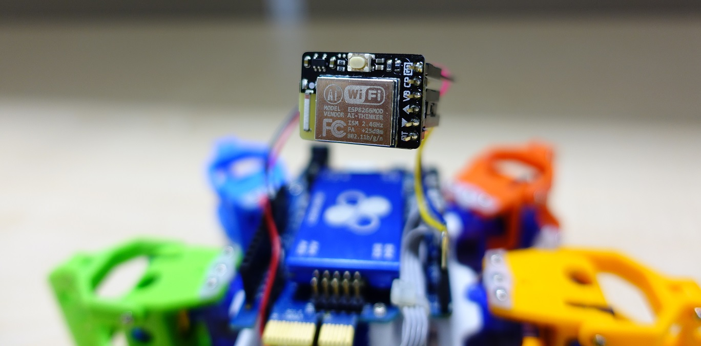
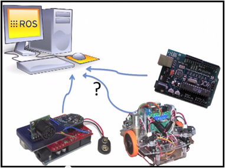
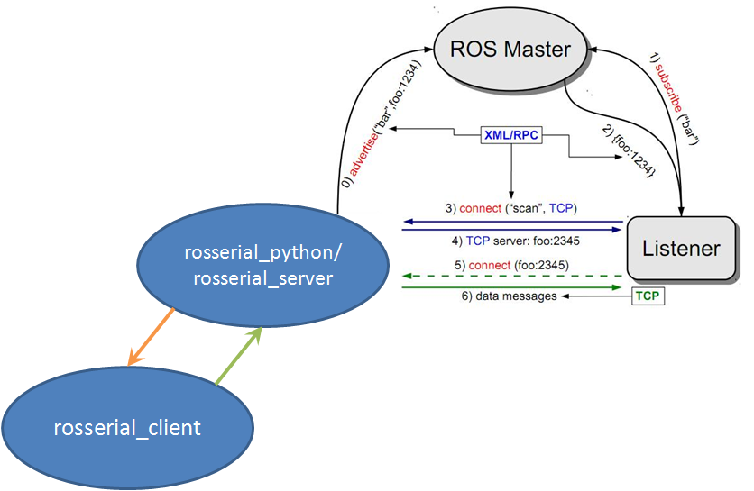

86hexapod With Ros
好久不見！最近忙著改版 86ME 和嘗試 86Duino + ESP8266 + Rosserial86 的組合，來達成控制多台 86Hexapod 的目標，今天也來和大家分享吧！
ESP8266

ESP8266 是一塊小巧便宜的電路板，也因此成為 Arduino 社群製作 Wifi 相關專案時經常採用的選擇。除了能讓 Arduino 連上無線網路，ESP8266 本身也能作為 AP，功能可以說是非常強大。關於 ESP8266 的相關教學已經有許多大大寫了，所以這邊就不提了。要拿 ESP8266 與 86Duino 連接的話，我是用這款 ESP8266，將 TX/RX 與 Serial1 的 RX/TX 接上，並且接上地與電（我選擇 3.3V）就算完成硬體部分。軟體的話要注意的是這款 bb-8266 預設的 baudrate 為 115200，請記得要設定正確。86Duino Libraray 的部分我是使用 WeeESP8266。在使用 Rosserial86 之前建議先用 AT Command 確認 ESP8266 有正確的運作。
Rosserial86

Rosserial86 其實已經在之前的文章中出現過了！不過那時候沒有寫得很詳細，所以這一次會提得更深入一些。Rosserial86 是由 Rosserial Package Porting 而來，讓 86Duino 能夠與 ROS 中的 Topic 溝通。那麼為何不讓直接跑 ROS 來溝通呢？雖然 L86duntu 有提供這樣的功能，但某些方面的應用並不需要使用像 Ubuntu 一樣那麼龐大的 OS，只需要一般 86Duino 的環境就可以解決了，這樣的情況下，選擇 Rosserial86 是更加簡潔有力的，Rosserial86 正好提供了簡單快速的方式來與 ROS 溝通，傳輸的介面包含 Serial Port、Ethernet、WiFi(ESP8266)。而當時製作的版本為 ROS Indigo，後面的版本雖然沒有實測過，但理論上應該都可以正常運作。 
簡單介紹之後，就來談談 Rosserial86/rosserial 是如何運作的，首先，ROS 端（通常為 PC）上要開啟一個 node 來當作與嵌入式裝置溝通的伺服端，ROS Hydro 後可以選擇 rosserial_python 或 rosserial_server，這個 node 與嵌入式裝置（86Duino/Arduino）會透過自定義的 protocol 進行溝通。而 rosserial_arduino、rosserial_embeddedlinux、rosserial_86duino 則都隸屬於 rosserial_client，由上面的架構圖可見。
ROS-side
總結上一段來說，ROS 端要先安裝 rosserial 這個 package，要建立連線時先開啟 roscore 和 rosserial_python 或 rosserial_server，視連線方式來決定指定如何下，舉 rosserial_python 為例，用 serial port 時為 rosrun rosserial_python serial_node.py /dev/ttyXXX，用 ehternet/wifi 時為 rosrun rosserial_python serial_node.py tcp，預設的 port 為 11411，有需要變更可在下參數調整。而 rosserial_server 則分為 serial_node 與 socket_node。這次進行多台連線我是採用 rosserial_server socket_node 走預設的 port。
Connect with ROS
搞定無線網路與 ROS 段設定之後，就可以利用新改好的 Rosserial86 與 ROS 連線囉！範例程式：
#include <ros.h>
#include <std_msgs/String.h>
#include <geometry_msgs/Pose2D.h>
ros::NodeHandle nh;
void messageCb( const std_msgs::String& cmsg){
Serial.println(cmsg.data);
}
geometry_msgs::Pose2D msg;
ros::Publisher chatter("chatter2", &msg);
ros::Subscriber<std_msgs::String> sub("chatter", &messageCb );
double a[3] = {0};
void setup()
{
nh.getHardware()->setESP8266(Serial1, 115200);
nh.getHardware()->setWiFi("SSID", "PASSWORD");
nh.initNode("IP OF ROSSERIAL SERVER");
nh.advertise(chatter);
nh.subscribe(sub);
}
void loop()
{
msg.x = a[0]++;
msg.y = a[1]++;
msg.theta = a[2]++;
chatter.publish( &msg );
nh.spinOnce();
delay(50);
}
上面的範例會讓 86Duino 發送模擬的位置訊息到 chatter2 這個 topic，並接收 chatter 這個 topic 送來的訊息，簡單測試完畢之後，就能把多台 86Hexapod 連上 ROS 並且一起控制了。除了一次控制多台小六足外，有興趣的玩家還能利用 ROS 上豐沛的資源來製作各種不同的功能唷！
Robots Exercise
基於上述的基礎，大家異想天開的要在公司尾牙表演機器人版的妖怪體操 XD